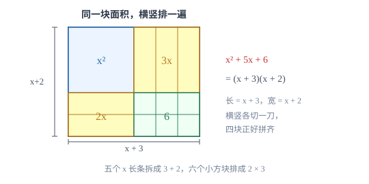

因式分解
因式分解是把和差改写成乘积，方向与整式乘法正好相反；它是一切「约分、降次、求根」的前置动作。
| 所属主题 | 数与式 |
|---|---|
| 所属模块 | 代数 |
| 课标学段 | 第四学段（7~9 年级） |
| 前置知识 | 整式的运算 |
| 核心素养 | 运算能力抽象能力 |
教材定位
人民教育出版社《人教版（2024版）义务教育教科书·数学》
八年级上册第17章 因式分解17.1 用提公因式法分解因式17.2 用公式法分解因式
对应八上 17.1 与 17.2。本篇比教材多讲了十字相乘与分组分解两种方法，属于常用的补充技巧。
说明
因式分解是把一个多项式写成几个整式乘积的形式。它和整式乘法是互逆的两个方向：整式乘法把 (x+2)(x+3) 展开成 x^2+5x+6，因式分解把 x^2+5x+6 收回到 (x+2)(x+3)。判断一个式子有没有分解完，标准是：每个因式都不能再分解，且结果必须是乘积而不是和。
初中要求掌握四种方法。提公因式法是第一选择：公因式由系数的最大公约数与各字母的最低次幂组成。公式法用两条：平方差 a^2-b^2=(a+b)(a-b)，完全平方 a^2± 2ab+b^2=(a± b)^2。分组分解用于四项及以上的式子，把能提取或能套公式的项分成一组，组间再提出公因式。十字相乘法专门处理二次三项式 x^2+px+q：找两个数，积等于 q、和等于 p，就能写成 (x+\text数)(x+\text数)。
使用场景
当题目要求解一元二次方程时，第一步几乎总是移项使一边为零，再因式分解成两个因式的积等于零，于是每个因式分别为零，两次得到一元一次方程。降次的关键就在这一步，不会分解就只能套求根公式。
当题目要求分式化简、通分或解分式方程时，分子分母必须先分解因式，才看得出公因式是什么、最简公分母是什么。此外，像 2026^2-2024^2 这类「两个大数的平方相减」的计算题，分解成 (2026+2024)(2026-2024) 后一步就能算完。
注意点
分解必须彻底。2x^2-8=2(x^2-4) 只做了一半，括号里的平方差还要继续分解成 2(x+2)(x-2)。检验办法是把结果乘回去，看能否还原；同时看每个因式是否还能再提或再套公式。
提公因式时，若某一项恰好等于公因式，提出后括号内要留下 1 而不是空着：3a^2-3a=3a(a-1)，不是 3a(a)。另外提完公因式后括号内的项数必须与原多项式项数相同，这可以当成自检。
证明

图 1：十字相乘不是口诀，而是把 x^2+5x+6 这一堆方块重新拼成一个长方形
证明
结论 1把 (x+p)(x+q) 展开得 x^2+(p+q)x+pq，所以二次项系数为 1 的二次三项式，两个一次因式里的常数必然满足「积等于常数项、和等于一次项系数」。
先确认两条路互为逆运算。把 (x+p)(x+q) 展开：x^2+qx+px+pq=x^2+(p+q)x+pq。这说明只要二次项系数是 1，二次三项式的两个一次因式里的常数，必然满足「积等于常数项、和等于一次项系数」。
关键一步依据是多项式乘法法则：x^2 与 pq 相乘给出常数项，qx 与 px 合并成 (p+q)x 给出一次项系数。展开与因式分解互为逆运算，所以这条等式是「怎样拆」的依据，而不是靠试数猜出来的。
结论 2x^2+5x+6 的两个因式是 (x+2) 与 (x+3)，即 x^2+5x+6=(x+2)(x+3)。
反过来用：看到 x^2+5x+6，要找两个数积为 6、和为 5。6 的整数分解有 1× 6、2× 3、(-1)×(-6)、(-2)×(-3)，其中只有 2+3=5 符合，所以 x^2+5x+6=(x+2)(x+3)。
关键一步依据是上一条的「积等于常数项、和等于一次项系数」：先把常数项 6 的整数分解列全，再从中筛出和等于一次项系数 5 的一对；筛选条件只有一条（和等于一次项系数 5），满足它的整数分解只有一种，所以答案唯一，不用再挑。
结论 3因式分解 x^2+5x+6=(x+2)(x+3) 也可以用面积重排来解释。
这个结论有面积解释（图 1）：x^2+5x+6 是「一个 x^2 大方块 + 五个 x 长条 + 六个单位小方块」。把它们重排，五个长条拆成 3+2，六个小方块排成 2× 3，正好拼成长 x+3、宽 x+2 的长方形。面积没变，只是重新切了一刀，所以两种写法相等。
关键一步依据是面积不变量：x^2+5x+6 与 (x+3)(x+2) 表示同一块面积，只是切法不同，所以两式相等；这张图还顺带说明了常数项为什么是 2× 3=6、一次项为什么是 3+2=5。
结论 4平方差公式与完全平方公式的来路相同，区别只在切法。
平方差与完全平方同理，都是把一块面积换一种切法。区别在于：平方差是「大正方形剪掉小正方形后拼长方形」，完全平方是「正方形切成四块」，切法不同，公式就不同。
关键一步依据是「同量不同切法」这一统一理由：只要两个式子表示同一块面积，它们就相等；切法决定公式的形状，所以记住切法比死记公式更牢，也更容易在新题里认出该用哪一条。
动手实验
用一张方格纸画 x^2+5x+6 的拼图（取 x=2 厘米作图，即 4+10+6=20 平方厘米），剪成一块 2× 2、五个 2× 1、六个 1× 1，尝试拼成长方形。能拼成的尺寸是 5× 4，对应 (x+3)(x+2) 在 x=2 时的值 5× 4=20。拼不成长方形时，说明这两个数选错了。
解题思路
按「一提二套三分组四十字」的顺序走，不要跳步。第一步看有没有公因式，有就先提，提完再看括号内；第二步看项数，两项试平方差、三项试完全平方或十字相乘；第三步四项以上考虑分组；第四步二次三项式用十字相乘。顺序固定，是因为先提公因式能让括号内的式子变简单，后面的判断才容易。
十字相乘的操作要落到纸上。以 x^2-x-6 为例：常数项 -6 分解为两数之积，同时要满足和为 -1。列出 (-3)× 2=-6 且 -3+2=-1，于是写成 (x-3)(x+2)。符号规律可以这样记：常数项为负，两数异号，和的符号跟着绝对值大的那个走；常数项为正，两数同号，和的符号与一次项系数相同。
分解完必须验算，方法有两个：把结果乘开看是否还原；或者代一个具体数值进去算两边是否相等。考试里推荐前者，因为能同时检查符号和系数；平时练习可以用后者快速判断。
按场景的例题
例 1（场景：竞技与游戏） 计算题里两个大数的平方差
计算 2026^2-2024^2。
解：两项都是平方且相减，套平方差公式，把 2026 看作 a、2024 看作 b：2026^2-2024^2=(2026+2024)(2026-2024)=4050× 2=8100。若直接算平方，需要处理 4104676-4096576，既慢又容易错。
答：8100。
例 2（场景：图形设计） 长方形场地的长与宽用含字母的式子表示
一块长方形场地的面积是 (x^2+7x+12) 平方米，长和宽都是含 x 的一次式，且长比宽大。求长和宽。
解：把二次三项式分解。常数项 12 分解成两数之积，且两数之和为 7：3× 4=12、3+4=7，所以 x^2+7x+12=(x+3)(x+4)。因为长比宽大，取较长的因式作为长。验算：(x+3)(x+4)=x^2+4x+3x+12=x^2+7x+12，还原正确。
答：长是 (x+4) 米，宽是 (x+3) 米。
例 3（场景：生活优化） 因式分解的完整拆分与代入求值
把因式分解做完整：3a^3-12ab^2。并说明当 a=2、b=1 时这个式子的值。
解：先提公因式 3a，得 3a(a^2-4b^2)；括号内是平方差，4b^2=(2b)^2，继续分解得 3a(a+2b)(a-2b)。代入 a=2、b=1：3× 2×(2+2)×(2-2)=0。用原式核对：3× 8-12× 2× 1=24-24=0，一致。
答：3a(a+2b)(a-2b)；当 a=2、b=1 时值为 0。
常用推论
两个连续奇数的平方差一定能被 8 整除：设它们为 2n-1 与 2n+1，则 (2n+1)^2-(2n-1)^2=(4n)(2)=8n。
若 x^2+mx+12 能分解成两个整系数一次式的积，则 m 只能是 ± 13、± 8、± 7——分别对应 1× 12、2× 6、3× 4 三组分解的和。这类「求整数 m 的所有可能值」的题，本质是枚举常数项的因数对。
由 a^2+b^2-2a-4b+5=0 可以配方成 (a-1)^2+(b-2)^2=0，从而 a=1、b=2。把常数拆成两个平方数相加，是分解与配方结合起来的常用手法。
易错点
错x^2-4=(x-2)^2
为什么错把平方差当成完全平方。(x-2)^2=x^2-4x+4，中间多出了 -4x 这一项。
正确x^2-4=(x+2)(x-2)。平方差是「两个平方相减」，结果是两个一次式的积，不是平方。
错x^2-5x+6=(x+2)(x+3)
为什么错只检查了积等于 6，没检查和。(x+2)(x+3) 展开后一次项是 +5x，符号与题目相反。
正确x^2-5x+6=(x-2)(x-3)。两数积 6、和 -5，只能是 -2 与 -3。
错2x^2-8=2(x^2-4)，认定分解完毕。
为什么错括号内的 x^2-4 仍是平方差，可以继续分解。分解不彻底等于没做完。
正确2x^2-8=2(x+2)(x-2)。检查标准：每个因式都不能再分解。
直观理解
把多项式想成一块形状不规则的地砖，因式分解就是把它重新切、重新拼，拼成一个整齐的长方形：长和宽就是两个因式。提公因式是「先按统一尺寸切一刀」，平方差是「大块挖掉小块再拼」，十字相乘是「横竖各排一遍直到边缘对齐」。拼不齐，就是因数选错了。